IE057
Cherry Wood Vinyl Wrap
Cherry wood vinyl wrap with rich reddish-brown wood grain. Ideal for cabinets, furniture wrapping, wall panels, and interior applications.
Roll size 1.23m x 50 m
KOINTEC 27/28 · 56 finishes
KOINTEC wood interior film gives cabinets, doors, wardrobes and wall panels the look and grain of real timber without sanding, staining or replacing the surface underneath. This page lists every wood finish in the KOINTEC 27/28 catalogue, from light oak and maple to walnut, cherry and painted timber, each with its product code. Premium Wood adds deeper grain and richer tones for hospitality and reception joinery, while Painted and Texture Wood cover matt painted looks and tactile grains. Use the codes below to request a quote or to compare finishes in the flipbook.
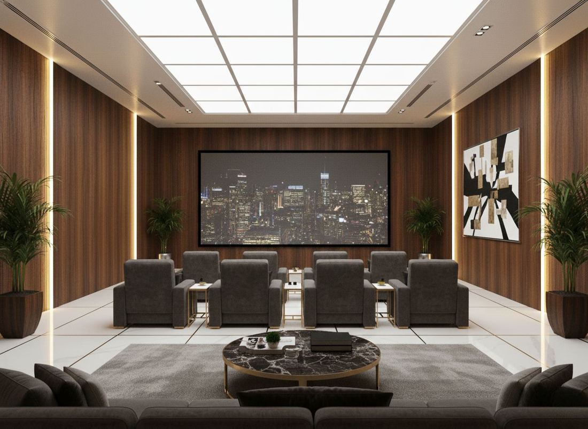

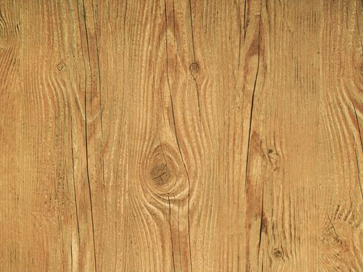

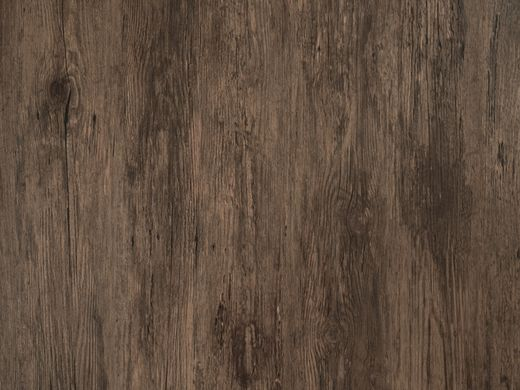
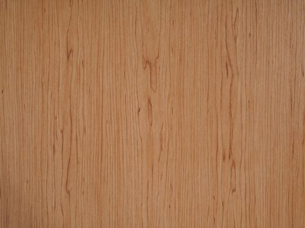
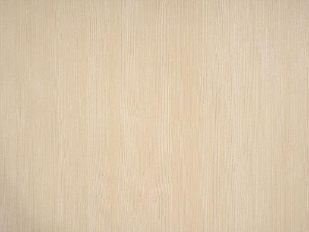
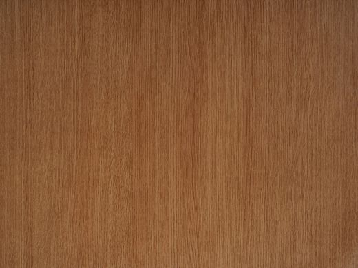
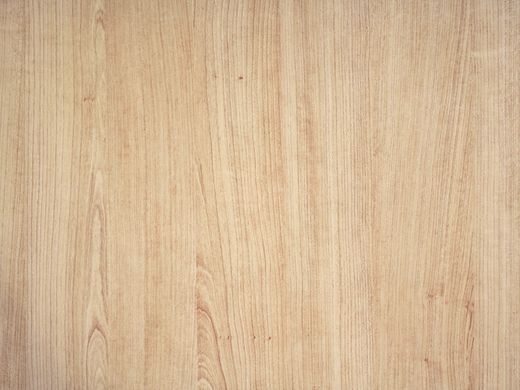
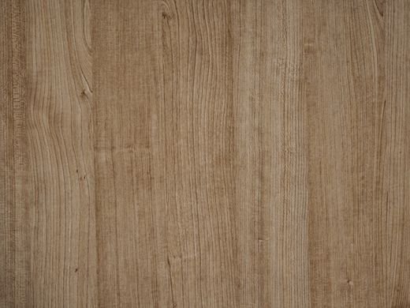
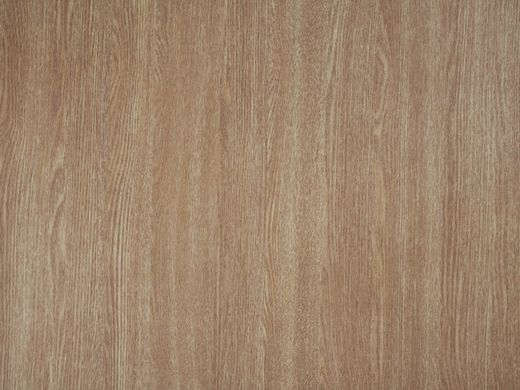
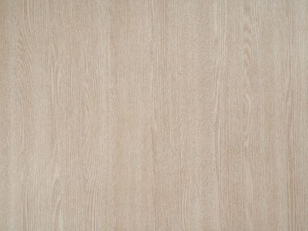
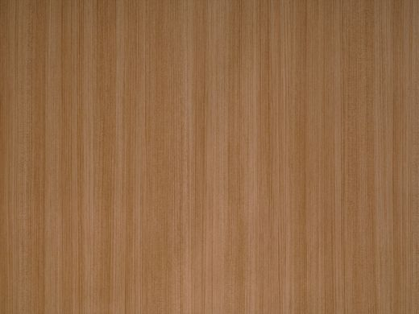
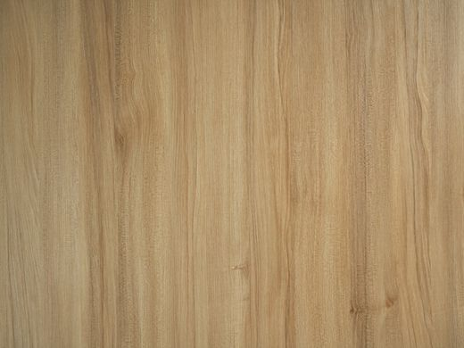
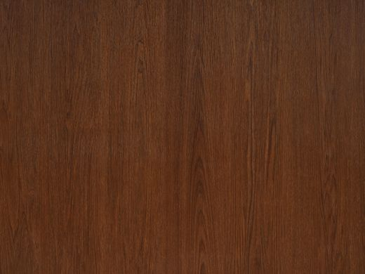
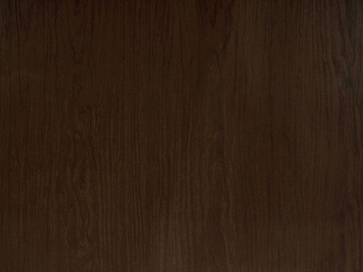
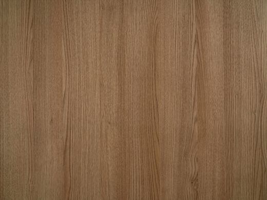
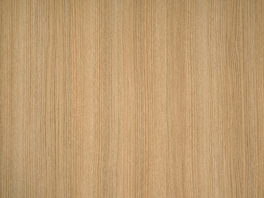
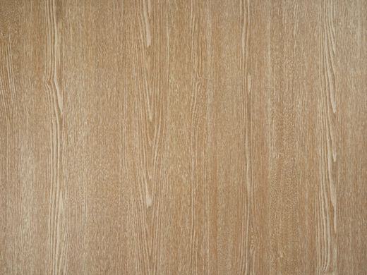
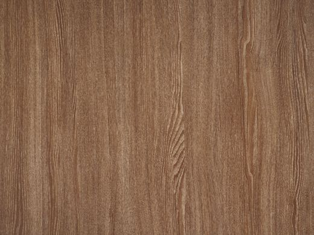
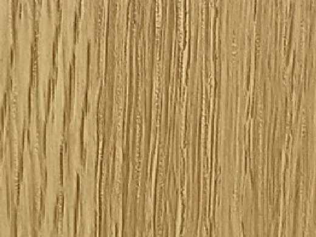
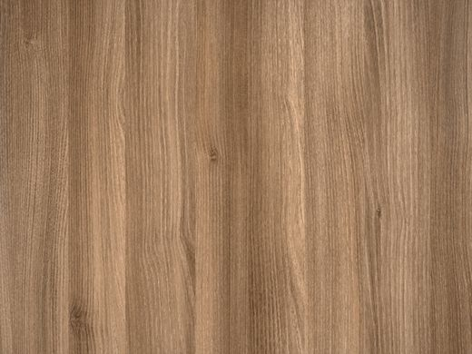
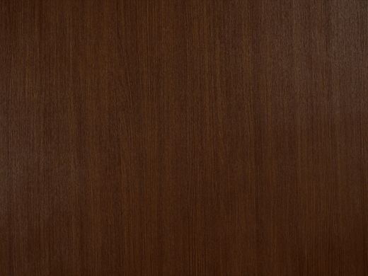
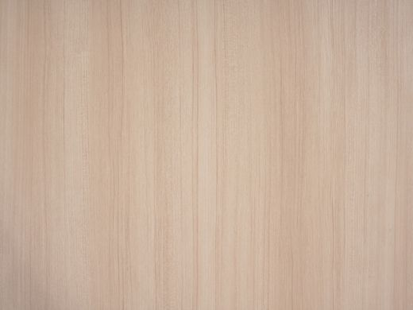
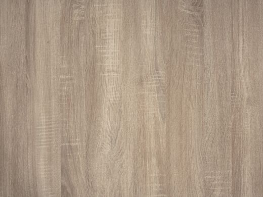
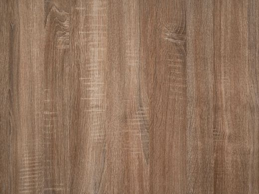
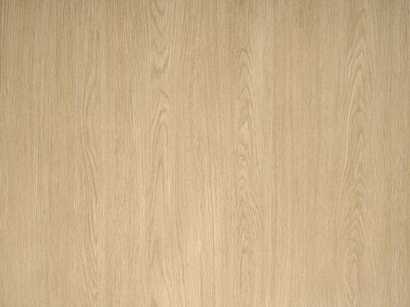
It is a self-adhesive architectural film, made in Korea, that gives existing surfaces such as cabinets, doors, walls and furniture a wood finish without replacing them.
56 finishes across Wood, Premium Wood, Painted Wood, Texture Wood. Each one is listed on this page with its product code.
From XESS Trading LLC in Al Quoz, Dubai, the authorized KOINTEC distributor in the UAE since 2016, through interiorfilm.com. We also supply Saudi Arabia and Qatar.
Send the product codes you like to our team through the contact page on interiorfilm.com, by WhatsApp on +971 55 217 8882 or by email to info@xesstrading.com.